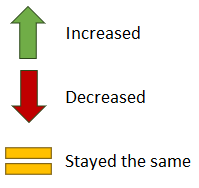

Research Driven E-Commerce Strategy
Much of the work that I do as a researcher is protected by non-disclosure agreements. I conducted the entire research process on E-Commerce site, Lululemon, to demonstrate the elements in a way that is open and accessible to the public.
The Client:
Lululemon
The Ask:
A comprehensive E-Commerce Strategy built from User Experience Research
Process Overview:
- Competitor and SWOT Analysis
- Usability Analysis
- Defining the Target Audience
- User Persona Creation
- Defining the KPIs -Key Performance Indicators
- Customer Empathy Mapping
- Customer Journey Mapping
- Multi-Channel Marketing and Social Media Strategy
- Final Analysis and Wireframes
Process Details:
Competitor and SWOT Analysis
Lululemon has a strong presence in the marketplace, but they also have fierce competition. Lululemon offers some unique ways of selling athletic apparel that its competitors do not and vice versa:
- Lululemon offers an affiliate program (akin to Multi-Level Marketing), which offers the oportunity to spread awareness about their products through word-of-mouth sales and parties.
- Some of Lululemon's competitors are utilizing a monthly, subscription-based sales model
- One of Lululemon’s key strengths lies in its inclusive model. Lululemon offers a wide range of sizing, including plus size, which makes its products more available to the marketplace than some of its competitors.
- In addition to offering clothing in a wide range of sizes, Lululemon also utilizes models that accurately represent its customer base, including plus size models, another advantage Lululemon has over competitors.
- Some of Lululemon's competitors offer children’s apparel, which presents a potential opportunity for Lululemon.
Usability Analysis
Lululemon
- Lululemon’s website is easy to use, aesthetically pleasing, memorable, and errors are all but non-existent.
- The site makes good use of white space and movement while avoiding so much movement that it becomes overwhelming or difficult to use.
- Site navigation is simple to understand and there is a visible shopping cart in the upper right corner that is easy to see and click on, making checking out simple.
Fabletics
- Fabletic’s site also makes good use of white space but there is a lot of movement, which can be overwhelming and distracting.
- There is no visible shopping cart in the upper right corner of the screen, a common feature on other e-commerce websites.
- When site visitors try to add an item to their shopping cart, they are shown a pop-up on the screen asking them to sign in or sign up. Even though there is an option for site visitors to check out as a retail guest, when visitors try to do this, they are prompted to sign in or sign up and are not able to navigate past that screen without entering the required information. This makes site navigation and purchasing items difficult.
- Site visitors must visit specific pages, such as the main Fabletics page, to obtain information about how the subscription model works.
- Although it is easy to find products, it is not as easy to buy them.
- Overall, the site is confusing and seems deceptive, and users find themselves committing a lot of site errors (pages that prompt them to enter information that they cannot progress past without completing this page).
Alo Yoga
- Alo Yoga’s website is easy to navigate.
- Alo Yoga's site is structured much the same way Lululemon and many other e-commerce sites are structured with a visible shopping cart in the upper right corner of the screen.
- Alo Yoga makes good use of white space and provides some interest and visual appeal through movement, which is used well and does not become overwhelming.
- Images scroll across the screen about every 5 seconds, which gives the visitor just enough time to view the image and accompanying text. There is enough time for a site visitor to click on the image if they find the products showcased appealing. If the site visitor does not find the product appealing, there are more products below and it is easy for visitors to understand they can scroll down to see additional items.
- Adding items to the shopping cart is simple and, unlike Fabletics, users are not required to provide any credentials or register with the site to continue shopping or check out.
- All of these combined make learning how to use the site very easy.
Defining the Target Audience
Gender
- 68.42% of Lululemon’s customer base identifies as female
- 31.58 identifying as male
- There are no consumer metrics currently available regarding non-binary gender identification.
Age
- 25.06% of Lululemon’s customers are between the ages of 18-24
- 31.44% are between the ages of 25-34
- 19.54% of Lululemon’s customers are between the ages of 35-44
- Combined, 74.81% of Lululemon’s customers are between the age of 18-44, with the largest grouping coming from the ages 25-34 group
Interests
- Lululemon’s paid advertisements and visual elements utilized on their website depict an image of their customer as one who cares about fitness. Given Lululemon’s stellar success in a tough COVID-19 market, this seems to indicate that Lululemon’s customers primarily visit their site to purchase apparel with health and fitness and the forefront of their minds.
- With the largest majority of Lululemon’s age demographic in the 25-34 age group, Lululemon’s largest customer age group is in the Millennial category.
- Millennials care about the environment, debt management and avoidance, and social issues such as gender and marriage equality, and are tech-savvy. They are frequently swayed by the purchasing tendencies of their friends and peers and tend to favor companies that prioritize limiting environmental impact.
Marital Status
- Since statistical data from the US Bureau of Labor Statistics shows that on average, approximately 50% of women in Lululemon’s consumer demographic age range have been married at least once, it stands to reason that at least 50% of Lululemon’s female customer base is married, has been married, or will be getting married.
Occupation and Education
- Lululemon’s target audience does not have a commonality with relation to occupation.
- Lululemon’s success with a more medium to high-end pricing model probably means that most of Lululemon’s customers are skilled workers with earnings in the middle or upper-class pay scale.
- The age range of Lululemon’s largest group of customers, 25-34, comprises shoppers who have had the opportunity to complete a college education and make some headway in their chosen field, giving them the opportunity for earnings in the middle to upper-class pay category.
Location
- Lululemon first launched in Canada in 1998 and has since expanded to more than 136 countries.
- Lululemon’s customer base is represented by approximately:
Personality and Lifestyle Info
- In the 25-44 age group, approximately 38% are married couples who have children, and 19% are single parents with children.
- This means that more than 50% of adults aged 25-44 have children.
- Research has shown that people who have children are more likely to purchase branded, well-constructed apparel for themselves and their families.
- With over 45 patents on athletic gear, Lululemon’s branded athletic apparel is highly appealing to this demographic’s purchasing tendencies, both for themselves and for their family.
Goals
- Millennials favor investing their money in socially responsible entities.
- Millennials strive to live debt-free and prioritize quality when making purchase decisions.
- Millenials feel that buying cheap products that will not hold up over time is a waste of time, money, and resources.
- Millennials are also very health conscious when compared to other generations.
- They need athletic gear to help them meet their personal health and fitness goals.
- They prioritize not only physical health but also mental health and well-being.
- They generally favor yoga, meditation, and other activities that work both the body and mind.
Purchase Barriers
- With the assurgency of COVID-19, the main barrier to purchase for all shoppers has been brick-and-mortar operations.
- Companies like Lululemon, with a strong e-commerce presence, have the upper hand in this scenario.
- Approximately 60% of Lululemon’s e-commerce customers purchase their apparel and products from a desktop device and the remaining 40% purchase from a mobile device.
- Many consumers who purchase Lululemon’s branded athletic apparel also shop for their children online. Currently, there is no children’s apparel available on Lululemon’s website.
How their purchases on your site fulfill their needs
- Many of Lululemon’s e-commerce customers visit their site to purchase athletic apparel, which they need to help them to meet their personal health and fitness-related goals.
- Lululemon's prioritization of sustainability, diversity, inclusion, pay equity, and efforts to reduce packaging waste appeal to millennials more than any other generation.
- Millennials prioritize not only physical fitness but also mental health and well-being as well.
- For this reason, people in this age group favor exercises such as yoga that exercise both the body, mind, and spirit and look to brands like Lululemon for gear that helps them perform their best in these activities.
User Persona
Utilizing the information gleaned from defining the target audience, a single user persona was created.

KPIs -Key Performance Indicators
Five KPIs for tracking and driving performance
- Landing Page: Understanding where site visitors are entering Lululemon's gives important insight into what draws people to the site. This is a key element for decision making about marketing.
- Shopping Behavior:identifying drop-off points provides insight into what areas to explore to help retain visitors, drive them to fill their shopping cart, and, ultimately, check out and submit payment.
- Checkout Behavior: Checkout Behavior is akin to Shopping Behavior, but it tracks behavior through the multi-step checkout process. This can provide valuable insight into several areas.
Example, a promotion for free shipping is run, the Checkout Behavior Report will show if drop-off behavior: Three types of drop-off behavior changes: Increased, Decreased, Stayed the same.This type of data is extremely valuable.
If all other areas of Lululemon's site are dialed in, marketing efforts are bringing in visitors, apparel is well designed and priced to move, and visitors have a shopping cart full of apparel and accessories. If they leave the site because of a bug on the shipping address screen that is valuable information that can be used to convert a lot of drop-off traffic into sales revenue. - Traffic Sources: Traffic Sources is a great tool that provides valuable insight into how visitors arrive at your site.
- There are three major traffic sources for an e-commerce website:
Direct - derived from shoppers typing your site's URL directly into their web browser
Referral - derived from referrals. This could come from links shared by social media influencers or on other websites.
Organic - derived from search engine optimization and result from non-paid searches on search engines
- Understanding the source of traffic that drives visitors to Lululemon's site is key to determining where to focus marketing efforts. It provides valuable insight into which marketing efforts are successful and which are not.
- Conversion Rate A Conversion Rate report will identify which percentage of site visitors complete desired actions on the website. For Lululemon, the most important desired action is purchase completion. Tracking what percentage of overall site visitors make a purchase sheds light on whether marketing efforts are attracting the right or wrong demographic or if there are other issues with the website that are preventing visitors from making a purchase.
A final (key)word on KPIs:Google has begun to encrypt keyword insights. As much as 74% of all keyword search terms are now being encrypted and have been as far back as 2013. As much as 74% of keyword data is no longer available, making it unreliable as a performance indicator.
Customer Empathy Mapping - Hub and Spoke model

Customer Journey Mapping

Pain Points
- Intrigued by the features and ability to work out from home, Yasmin took out her phone and opened the Lululemon app, which she already had installed on her iPhone.
- Yasmin was unable to quickly locate the Mirror®.
- She didn’t find it under the top-level navigation under Accessories and couldn’t find it listed as its own item.
- She decided to check again later when she returned home and could access Lululemon’s e-commerce site on the web.
Decision
- After completing her research, Yasmin was pleased with the features and price point compared to similar items offered by competitors and decided to purchase the Mirror®.
- When she began the checkout process, Yasmin was surprised to see an additional $250 charge for delivery and installation.
- Yasmin felt deceived by this additional fee.
- She decided to go ahead with the purchase. After the Mirror® was delivered and installed and she began her first workout, Yasmin realized that the Mirror® has no touchscreen capability and that she needed to complete all actions and controls by utilizing the Mirror® app on her iPhone.
- This meant that pausing a workout when one of her children needed help with something meant she needed to open her phone, open the app, and find the pause button.
- Yasmin wished that there was touchscreen capability on the Mirror®.
Strengths
- Yasmin was pleased with the overall sleek look, design, features, compatibility with music apps (Spotify), and price point of the Mirror® compared to similar items offered by competitors.
- The workouts had good ratings and there is a big variety in the types of workouts offered.
- It looks like a simple full-length mirror when not in use.
- Unlike an exercise bike or other home gym equipment options available, the Mirror® doesn’t take up any space when not in use.
- Living in Mountain View, California, where real estate is at a premium, Yasmin doesn’t have extra space in her home to allocate to home gym equipment.
Brand Advocacy
- Yasmin found that she loved the workouts offered, loved the results she was getting, and became a brand advocate, frequently sharing her before and after pictures on her Instagram account, tagging Lululemon’s Mirror®
- Yasmin now frequently shares her experience with other moms on the soccer field sidelines and in other situations where health and fitness are a topic of discussion.
Opportunities
- Since sharing her experiences with the Mirror ® with acquaintances, Yasmin has learned about other “smart mirrors” on the market that offers features such as weather predictions and inspirational quotes.
- The sleek, attractive look was one of the main draws for Yasmin in purchasing The Mirror® and she now wishes it incorporated those other features.
- As a tech-savvy person herself, she knows that the technology that has been utilized to power and control the Mirror® could be used to incorporate these other features as well.
Multi-Channel Marketing and Social Media Strategy
Part 1 - Multi-Channel Marketing
- Fabletics, one of Lululemon’s competitors, is earning over $400M in annual revenue and sells products in the e-commerce space through its subscription offering.
- FitFabFun, another one of Lululemon’s competitors, also offers a subscription box and earns over $200M in annual revenue.
- Market demand is strong for these services. In addition to the other benefits listed previously, these services also offer an individualized feel, offering consumers what feels like a personal shopper experience, which feels luxurious and posh.
- The marketing campaign for a subscription offering of Lululemon apparel will be aimed at solving a problem for our buyer persona, Yoga Mom Yasmin:
- 32-year-old married female with a bachelor’s degree in computer science
- works full-time as a network administrator
- resides in Mountain View, California
- works from home as her employer’s office is closed in the face of COVID-19 restrictions
- does more shopping and other activities from home than ever before.
- she is busier than ever with two young children participating in distance learning at the same time that she is working from home.
- she has considered subscribing to one of Lululemon’s competitor’s subscription offerings, such as FabFitFun or Fabletics.
- The idea is to market this offering to existing customers who have registered accounts and any would-be customers who are following Lululemon on its existing social media platforms
- We will let subscribers to this service build in a grassroots fashion, spreading awareness by word of mouth via ambassadors and social media users.
- We will be sending email marketing material to all current and past customers
- We will feature this new offering on the top of each landing page of our mobile storefront, web-based storefront, and on our social media accounts.
- Our message will be “Making Comfort Easier”.
- We’ll be appealing primarily to current customers who purchase and wear Lululemon’s athletic attire already, making the purchase of these products even easier.
- Our campaigns will feature images of moms in Lululemon’s athletic wear helping their children with distance learning, making a healthy meal while the children color at the kitchen bar, and cuddling on the couch watching a movie, with kids in their PJs.
- In each image, a subscription box featuring Lululemon attire will appear in the background, opened.
- The image we’re portraying is that Yasmin received the box and is now wearing the attire throughout her entire day.
- She is comfortable and has found plenty of time to do all the things she needs to get done in her busy day, all while decked out in her Lululemon gear.
- We want to solve the problems of today, namely being busy at home the majority of the time with children, by providing an easy way to acquire comfortable, durable, wear-all-day Lululemon attire.
- We will measure success by tracking how many current customers, with registered accounts, convert to subscribers as well as how many new customers, without registered accounts, sign up as new subscribers.
- Additionally, we will track which pages customers are landing on and how they arrived there.
Part 2 - Social Media Strategy
Lululemon has a strong social media presence currently. With over 978K followers on Twitter, 3.7M followers on Instagram, and 2.6M followers on Facebook, Lululemon’s strongest competition is Nike, with 83.5M Instagram followers, and Adidas, with 23M Instagram followers. Lululemon’s Instagram account primarily features posts from ambassadors, and Lululemon wearers who are active in the athletic community and incorporates user-generated content.
Lululemon’s Facebook account features posts made solely by Lululemon. There are very few likes or comments relative to the number of followers they have, with just a few hundred likes, comments, or shares per post. Many with less than 100. Events are stale, with the most recent event posted from June of 2019, and many of the comments on advertisements are from disgruntled buyers, expressing their dislike of Lululemon’s products and/or customer service experience.
There are even some spam comments that have not been taken down. These spam comments are quite old, 4 weeks in one example. They demonstrate that the page and its posts are not being properly monitored or managed.
Lululemon’s Facebook presence does not give an overall good impression of Lululemon as a company, its products, or its customer service. This could be improved by allowing and encouraging Lululemon ambassadors and current consumers to compose posts and share posts from Instagram, where they are currently much more active.
With just a few hundred likes, shares, or comments per post, Lululemon’s Twitter account is also not attracting much interaction from followers. There are not many images shared in posts, something that could help to draw attention and interactivity.
In comparison, some of Lululemon’s strongest competition has very engaging and eye-catching posts and tweets. Tweets on Nike’s Twitter account attract thousands of likes and feature eye-catching images.

Overall, I do not feel that Lululemon’s social media strategy is a successful one. In general, Lululemon’s social media presence is being used as a megaphone rather than as a telephone. Posts associated with a new service offering (subscription service) would be a great opportunity to invigorate these social media presences and help to drive interactivity from both customers and ambassadors. Posting Tweets that feature more images, encouraging Facebook posts from ambassadors, and starting a new hashtag campaign on Instagram, #MakingComfortEasier, will help to revitalize and refresh these presences with something that will help drive consumers to Lululemon’s product pages, increasing overall shopping and checkout behavior to lead to more completed sales.
Any consumer who is mostly not familiar with Lululemon, or who has never purchased a product, who came across one of Lululemon’s social media sites would most likely come away with the impression that Lululemon does not have good products or customer service and that they do not monitor their social media sites with any level of detail. While there are answers to customer complaints, they’re very cold, often simply offering an apology and requesting that the conversation be taken into a private message, which often gives the impression that the company has something to hide.

While it is fine to ask a customer to offer more details in a private chat, a follow-up comment should be left, whenever possible, confirming that the issue was resolved and thanking the customer for taking the time to communicate over private messaging. This leaves any other readers of the post with the impression that the issue was followed through with and resolved by Lululemon.
References
“Fabletics Partners With Kevin Hart To ‘Fix What’s Wrong With Men’s Activewear’ By Creating Fabletics Men.”, Textile World, 10 Apr 2020, https://www.textileworld.com/textile-world/knitting-apparel/2020/04/fabletics-partners-with-kevin-hart-to-fix-whats-wrong-with-mens-activewear-by-creating-fabletics-men/, Accessed 2 August 2021.
Shieber, Jonathan. “FabFitFun surpasses $200 million in revenue as it hits million-subscriber milestone.“, Tech Crunch, 1 Nov 2018, https://techcrunch.com/2018/11/01/fabfitfun-revenue-surpasses-200-million-as-it-hits-million-customer-milestone/, Accessed 2 Aug 2021.
Facebook, https://www.facebook.com/lululemon/, Accessed 3 Aug 2021.
Instagram, https://www.instagram.com/lululemon/?hl=en, Accessed 3 Aug 2021.
Twitter, https://twitter.com/lululemon, Accessed 3 Aug 2021.
Final Analysis and Wireframes
I noticed when I visited Lululemon’s home page that there was a large hero image featuring one of Lululemon’s newer offerings, The Mirror, which is a home workout device. There aren’t any other images or products featured “above the fold”. My initial thought when visiting the home page was that if I didn’t know Lululemon is an athletic apparel maker, primarily, I could easily get the impression that they sell mirrors. So, when deciding how to put the home page together, I sought to provide a more balanced image of their offerings. I reduced the size of the main image and instead featured four large images “above the fold”. I included images with links to their flagship products, their women’s apparel, as well as images of men’s apparel, accessories, and The Mirror. Below the fold features more of their offerings, which can be alternated seasonally. For example, gloves, jackets, coats, and pants would make sense to feature in colder months, and water bottles, sports bras, shorts, and hair accessories would make sense to feature in warmer months.
I also added another navigation pane to the left side of the screen. Lululemon has a lot of offerings. Displaying them in this way makes it easy for visitors to find what they are looking for. It also can be a good way to help educate visitors on what Lululemon offers. For example, a site visitor may not be aware that Lululemon now offers men’s apparel. Listing this information on the left windowpane is a good way of letting them know that these offerings exist.

When I visited the Shopping Cart, I noticed that there are no suggested items to add to the shopping cart, which can be a good way to upsell and increase the total at checkout. I placed some images at the left upper side of the screen, which is where the eyes naturally fall as most people read left to right, top to bottom. The images are clickable links with an easy “add to cart” option. In the center of the page, I placed information in much the same manner that Lululemon’s cart features them now, providing a similar shopping experience for any return shoppers. To the right of the screen, I placed a cart total and details about where they are in the checkout process. In other words, which step the shopper is on and how many steps are left to complete.
I kept a similar layout for the Shipping and Billing Information pages but again added the suggested items to the upper left of the screen and kept the visual elements to the right of the screen that shows the visitor where they are in the checkout process. The confirmation page also follows a similar layout. It shows the customer a message of congratulations and a few details about the next steps. It also shows the customer which items they have purchased, what their total charge was, and what their order number is.


I kept the navigation at the top of the site the same on all pages. This helps to keep a cohesive feeling throughout the shopping process and allows the shopper to continue to add items to their cart at any time. I know from personal experience that I sometimes go to my cart to see what my total is then find that the top-level site navigation has been removed and can find no way to return to shopping unless I press my browser’s back button. I kept the site navigation at the top of the screen to help shoppers return to shopping if they want to add more items before checking out.